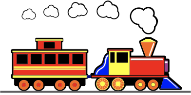
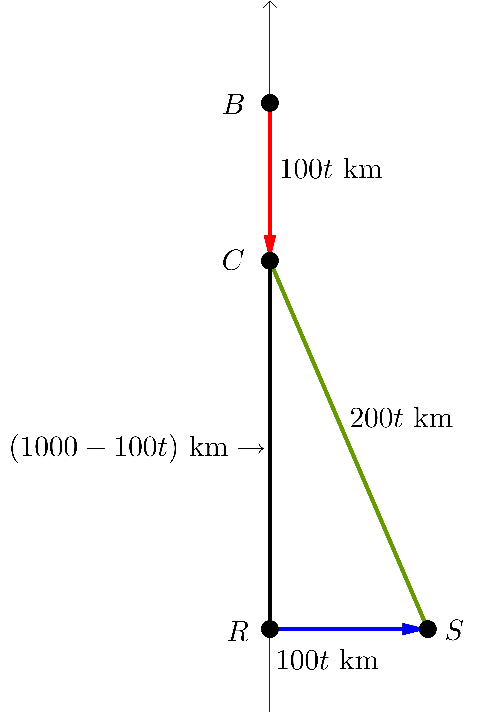

Problem of the Week
Problem E and Solution
Stay on Track
At noon, two trains are \(1000\) km apart. The first train is north of the second train and is traveling south. The second train is traveling east. Both trains travel at the same average speed, \(100\) km/h.
At what time is the total distance travelled by the two trains equal to the distance between the trains?

Solution
Let \(t\) be the time in hours until the total distance travelled by the two trains is equal to the distance between the trains.
Since each train is travelling at \(100\) km/h, the distance travelled by each train in \(t\) hours is \(100t\) km. The total distance travelled by the two trains is \(2\times 100t=200t\) km.
The diagram shows the positions of the two trains after \(t\) hours. The southbound train starts at \(B\) and moves to \(C\). The eastbound train starts at \(R\) and moves to \(S\).

Then \(BC=RS=100t\) and since \(BR = 1000\), \(CR=1000-100t\). We want the time \(t\) when \(CS=BC+RS=100t+100t=200t\).
\(\triangle CRS\) is right angled, so \[\begin{aligned}
CS^2&=CR^2+RS^2\\
(200t)^2&=(1000-100t)^2+(100t)^2\\
40000t^2&=1000000-200000t+10000t^2+10000t^2\\
20000t^2+200000t-1000000&=0\\
t^2+10t-50&=0\\\end{aligned}\] Using the Quadratic Formula, \[\begin{aligned}
t&=\frac{-10\pm \sqrt{100-4(-50)}}{20}\\
t&=\frac{-10\pm 10\sqrt{3}}{2}\\
t&=-5\pm 5\sqrt{3}\end{aligned}\] Since \(t>0\), \(-5- 5\sqrt{3}\) is inadmissible. Therefore, \(t=-5+ 5\sqrt{3} \ \dot=\ 3.66\) hours.
The distance between the two trains will be equal to their total distance travelled in \((-5+ 5\sqrt{3})\) hours, which is approximately \(3\) hours and \(40\) minutes after they leave their initial positions. The time will be approximately 3:40 pm.
Could the diagram be drawn any other way? On the next page the other two possible diagrams are briefly discussed.
We will repeat some of the initial work and then apply it to a second diagram.
Let \(t\) be the time in hours until the total distance travelled by the two trains is equal to the distance between the trains.
Since each train is travelling at \(100\) km/h, the distance travelled by each train in \(t\) hours is \(100t\) km. The total distance travelled by the two trains is \(2\times 100t=200t\) km.
Maybe the train travelling south gets to a point in line with the west to east direction of the second train.
The diagram shows the positions of the two trains after \(t\) hours.

Here, \(BR=1000\) km and it follows that \(t=10\) hours. The second train travels from \(R\) to \(S\), a total of \(1000\) km, in the same time. But here \(RS\) is also the distance between the two trains, so is also supposed to be equal to the total distance travelled by the two trains. The total distance travelled is \(2000\) km, but \(RS=1000\) km. This diagram is not possible.
Is it possible that the train travelling south goes lower than the west to east line along which the second train travels?
The diagram shows the positions of the two trains after \(t\) hours.

The distance travelled by the first train is represented by \(BC=100t\) km and it follows that \(RC=(100t-1000)\) km. The second train travels from \(R\) to \(S\), a total of \(100t\) km in the same time. The total distance is \(CS=200t\) km.
In any triangle, the sum of the lengths of any two sides of the triangle must be greater than the length of the third side. This is known as the triangle inequality. In \(\triangle RSC\), \(RC+RS=(100t-1000)+100t=200t-1000<200t=CS\).
Here, the triangle inequality is not satisfied, so this “triangle” cannot represent the situation presented in this problem. It can be shown that the triangle shown on the previous page satisfies the triangle inequality.